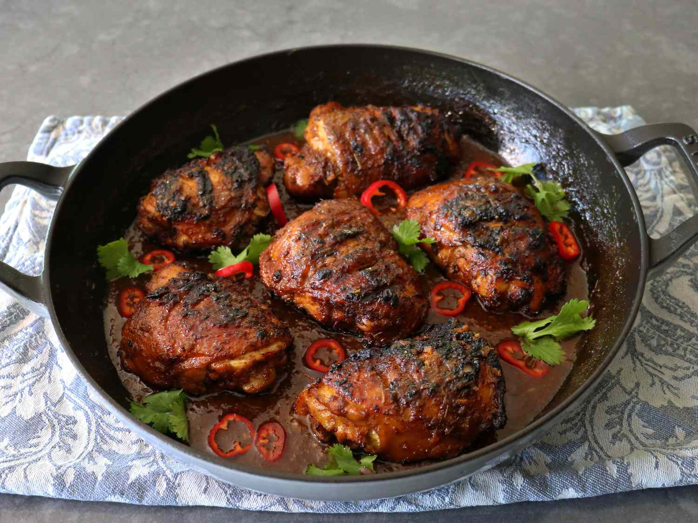

Home
Ayam Bakar (Indonesian Grilled Chicken)

How to make Ayam Bakar (Indonesian Grilled Chicken)
Ayam Bakar (Indonesian Grilled Chicken) is a popular Indonesian grilled chicken dish, marinated in a mix of spices, sweet soy sauce,
and sometimes coconut milk. It's typically simmered, then grilled until caramelized and smoky. Served
with rice and sambal, it's known for its bold, savory-sweet flavor with regional variations across Indonesia.
ingredients
- 3/4 cup sliced shallots
- 6 cloves garlic, peeled
- 1 (3 inch) piece ginger, peeled and sliced
- 1 stalk lemongrass, inside white part only, sliced
- 4 kaffir lime leaves (optional)
- 3 tablespoons vegetable oil
- 2 teaspoons ground coriander
- 1 teaspoon ground cumin
- 1/2 teaspoon ground turmeric
- 1/2 teaspoon ground white pepper
- 1 teaspoon kosher salt
- 1 tablespoon sambal chili sauce, or to taste
- 1/4 cup brown sugar
- 1/4 cup soy sauce
- 2 cups chicken broth
- 2 leaf bay leaves
- 6 thigh with skin chicken thighs
Directions
- Gather all ingredients
- Combine shallots, garlic, ginger, lemongrass, and lime leaves in a food processor or blender,
and grind into a very fine paste.
- Heat oil over medium-high heat in a large skillet and transfer in the mixture from the food
processor. Spread out into an even layer. Sprinkle over the coriander, cumin, turmeric, white
pepper, and salt. Cook, stirring, until the mixture starts to caramelize onto the bottom of
the pan and has become very fragrant, about 4 minutes.
- Add sambal, brown sugar, soy sauce, chicken broth, and bay leaves, and use a spatula to scrape
the bottom of the pan to deglaze. Bring to a boil over medium-high heat.
- With skin side up, make 3 cuts into the center of each thigh, perpendicular to the bone, about
1/2-inch apart. Place chicken into the sauce, skin side down, and reduce the heat to between low
and medium-low.
-
Continue to cook, tossing occasionally, until thighs are tender but not falling off the bone, and
sauce has reduced and become very thick. If chicken is finished cooking before sauce is reduced,
remove the chicken to a plate, set aside, and continue to reduce the sauce a few minutes more.
Reduce heat to low plac;e chicken back in until heated through.
-
Meanwhile, prepare a charcoal grill for medium-high heat. Grill chicken over charcoal, turning and
repositioning often, or until about half of the surface is charred, about 2 minutes per side. Less
direct heat can be used for less charring, but the smoky bittersweet grill marks are a key part of
the dish.
- Serve grilled chicken thighs on top of the sauce, with more sambal if desired.